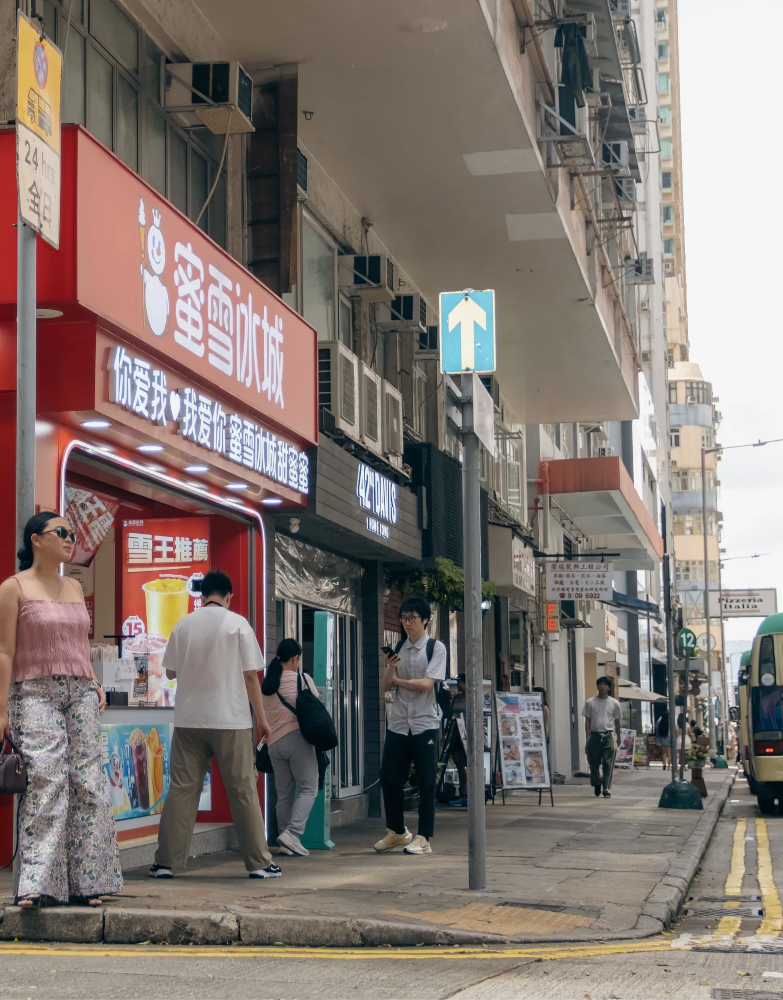
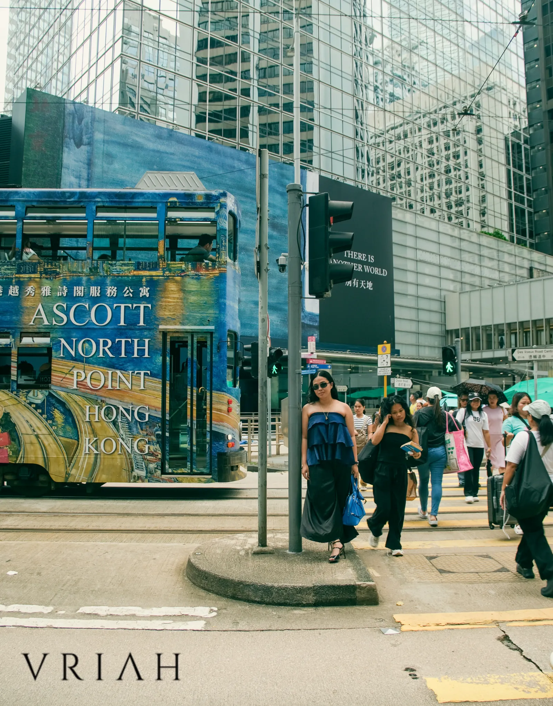
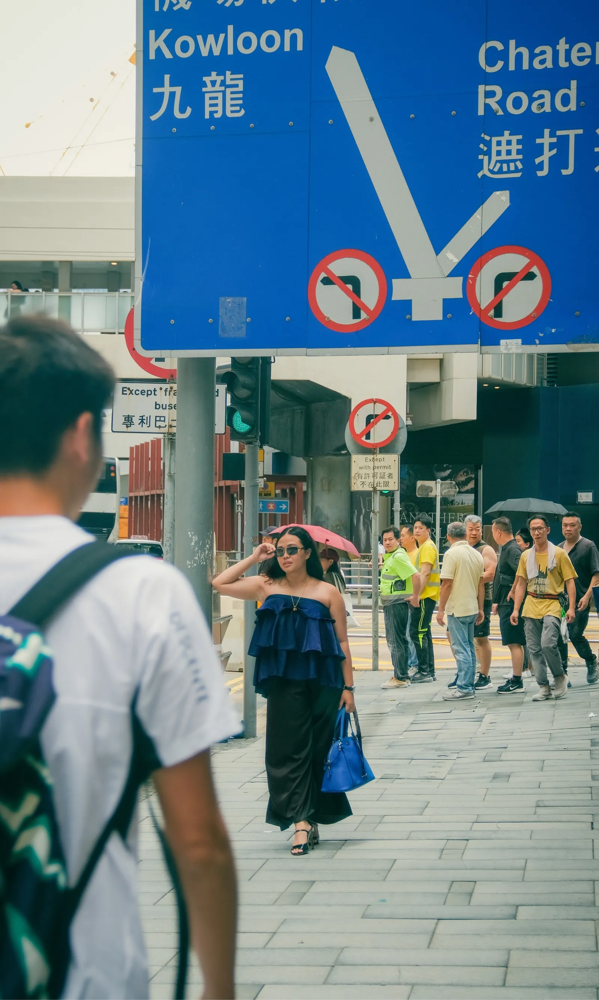
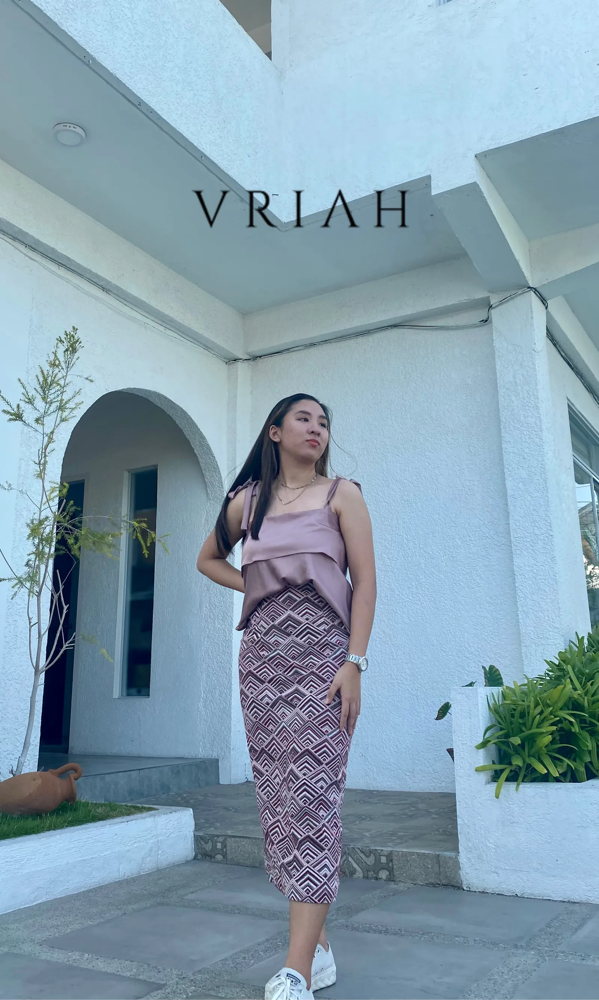
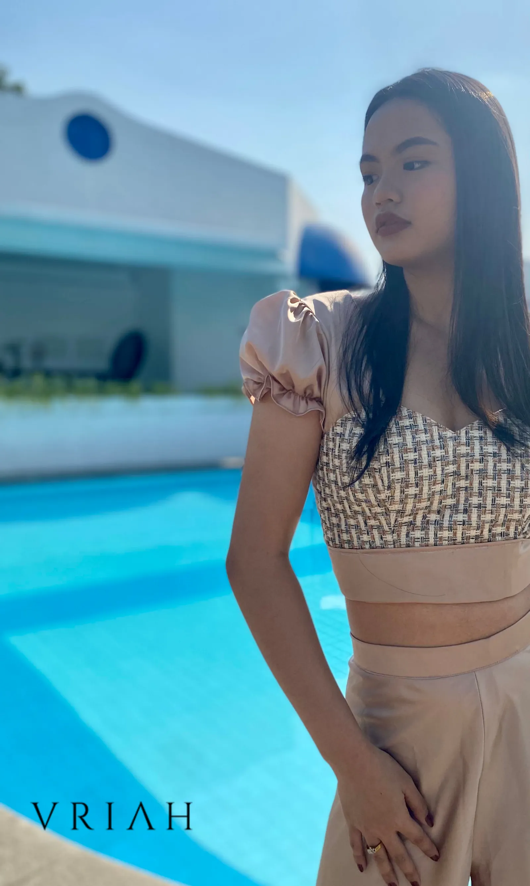
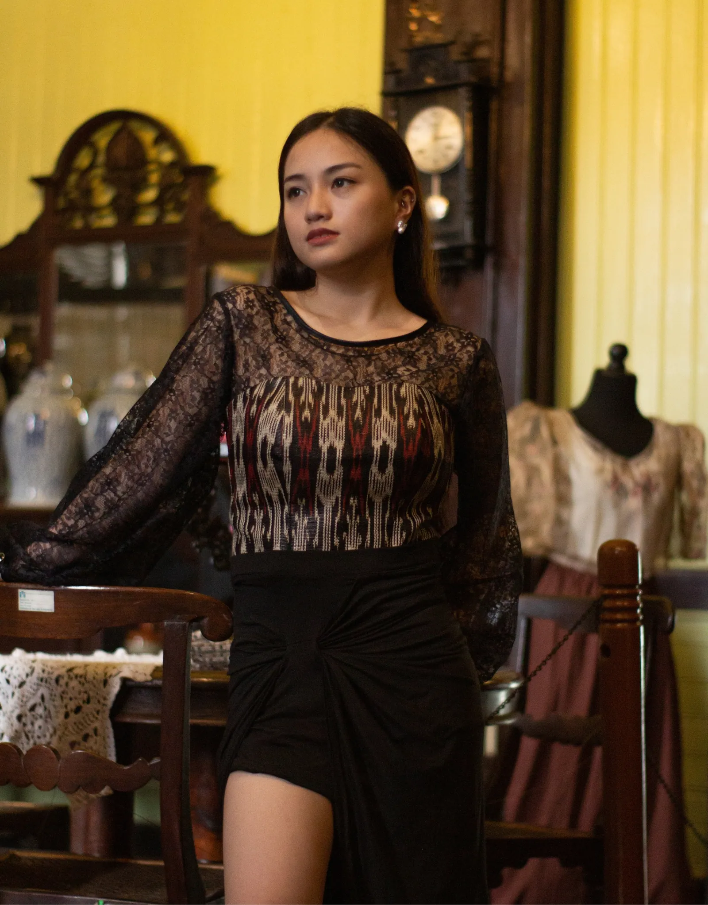

A Day, Considered
The Looks
Look 01
Blush Camisole, Floral Trousers
- Blush crinkle camisole
- Floral wide-leg trousers
3 photographs
Ask about Look 01 ↗


Look 02
Black Blouse, Lilac Print Trousers
- Black draped blouse
- Lilac floral wide-leg trousers
10 photographs
Ask about Look 02 ↗


Look 03
Navy Tiered Top
- Navy tiered strapless top
- Black wide-leg trousers
5 photographs
Ask about Look 03 ↗




Look 04
Silk Ruffle Top, Floral Shorts
- Mauve silk ruffle top
- Floral shorts
3 photographs
Ask about Look 04 ↗


Look 05
Mauve Camisole, Printed Midi Skirt
- Mauve camisole
- Patterned midi skirt
1 photograph
Ask about Look 05 ↗
Look 06
Champagne Puff-Sleeve Set
- Puff-sleeve top with woven bodice
- Satin wide-leg trousers
3 photographs
Ask about Look 06 ↗


Look 07
Lace-Sleeve Woven Top
- Woven top with sheer lace sleeves
- Black split skirt
4 photographs
Ask about Look 07 ↗

